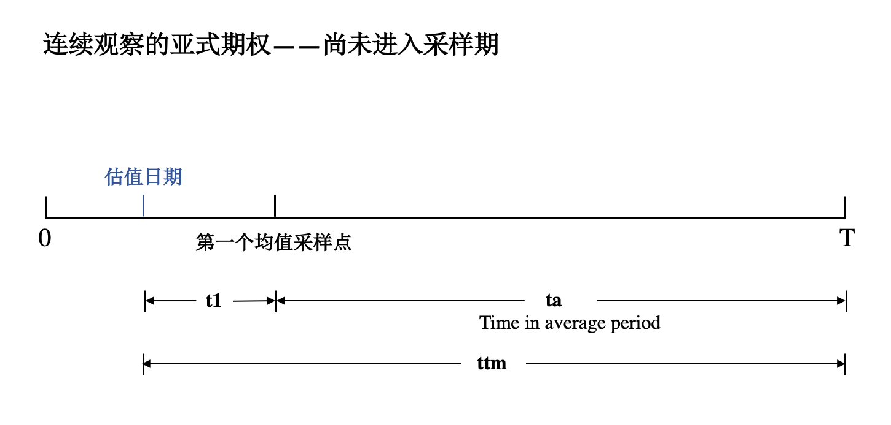
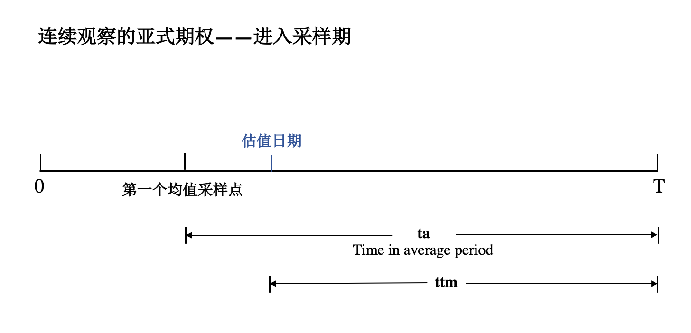
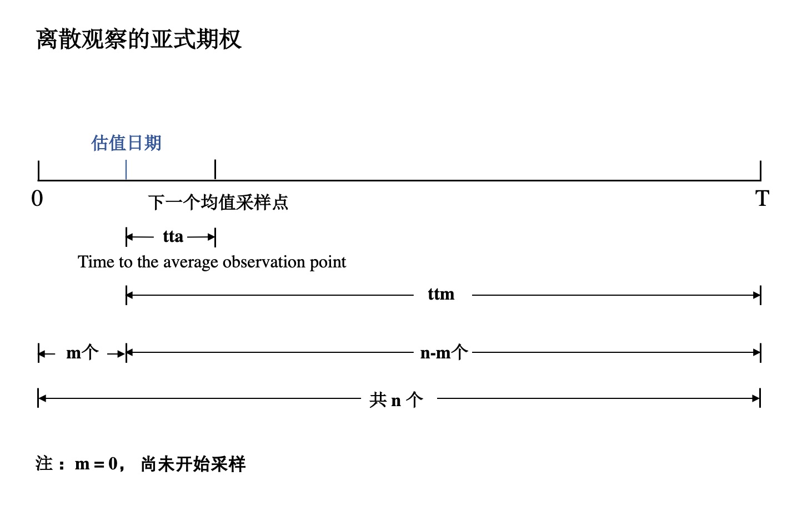

亚式期权¶
亚式期权 根据平均方法的不同分为几何平均亚式期权与算数平均亚式期权，其中算数平均亚式期权更为常见；根据平均对象的不同，又可分为浮动行权价亚式期权与固定行权价亚式期权。
固定行权价的亚式期权¶
连续观察¶
 {kind=link}
{kind=link}
- Pv(double spot, double r, double b, double volatility, double ttm, OptionType type, double strike, double sa, double ta, Method approx_method);
Example¶
#include <gtest/gtest.h>
#include "qlib/analytical_engine/asian.h"
TEST(TestAnalytical, ContinuousFixedAsian)
{
double spot = 100;
double r = 0.1;
double b = 0.05;
double vol = 0.15;
double ttm = 0.75;
double strike = 95;
double sa = 100;
double ta = 0.75;
auto pv = AnalyticalEngine::Asian::Arithmetic::Pv(spot, r, b, vol, ttm, OptionType::CALL, strike, sa, ta,
AnalyticalEngine::Asian::Arithmetic::Method::TURNBULL_WAKEMAN);
EXPECT_NEAR(pv, 7.0544, 1e-5) << "Asian option Pv calculation error";
}
离散观察¶
{kind=link}
- Pv(double spot, double rf, double b, double volatility, double ttm, OptionType type, double strike, double sa, double tta, int m, int n);
- Parameters:
- spot: double
- 标的价格。
- rf: double
- 无风险利率。
- b: double
- 持仓成本。
- volatility: double
- 波动率。
- ttm: double
- 到期时间。
- type: OptionType
- 期权类型, CALL 或 PUT。
- strike: double
- 行权价格。
- sa: double
- 目前平均价格。
- tta: double
- 当前时间到下一个均值采样点（average observation point）的时间。
- m: int
- 已经过去的观察日数量。
- n: int
- 观察日的总数。
- Returns: double
- 返回离散观察固定行权价的亚式期权的现值。
Example¶
#include <gtest/gtest.h>
#include "qlib/analytical_engine/asian.h"
TEST(TestAnalytical, DiscreteFixedAsian)
{
double spot = 95;
double r = 0.08;
double b = 0.03;
double vol = 0.1;
double ttm = 0.5;
double strike = 100;
double sa = 100;
double tta = 0.00;
int m = 0;
int n = 27;
auto pv = AnalyticalEngine::Asian::Arithmetic::Pv(spot, r, b, vol, ttm, OptionType::CALL, strike, sa, tta, m, n);
EXPECT_NEAR(pv, 0.2719, 1e-5) << "Asian option Pv calculation error";
}
浮动行权价的亚式期权¶
连续观察¶
- Pv(double spot, double rf, double b, double volatility, double ttm, OptionType type, double sa, double ta, Method approx_method);
离散观察¶
- Pv(double spot, double rf, double b, double volatility, double ttm, OptionType type, double sa, double tta, int m, int n);
- Parameters:
- spot: double
- 标的价格。
- rf: double
- 无风险利率。
- b: double
- 持仓成本。
- volatility: double
- 波动率。
- ttm: double
- 到期时间。
- type: OptionType
- 期权类型, CALL 或 PUT。
- sa: double
- 目前平均价格。
- tta: double
- 当前时间到下一个均值采样点（average observation point）的时间。
- m: int
- 已经过去的观察日数量。
- n: int
- 观察日的总数。
- Returns: double
- 返回离散观察浮动行权价的亚式期权的现值。